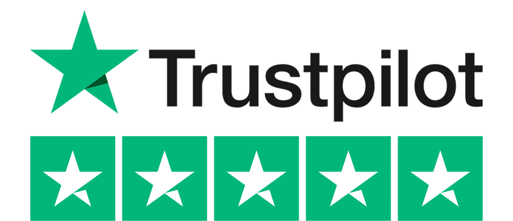

Wil jij ook zo'n mooie muur zonder gedoe?
Vanaf 4,75 hangen jouw favoriete herinneringen aan de muur- Jij upload de foto's, ons systeem maakt er iets moois van
- Meerdere foto's of één foto verspreid over meerdere shapes
- Binnen 5 werkdagen verzonden. Spoed binnen 1 werkdag
- 614.307 combinaties mogelijk, dus altijd een unieke muur
- Gedrukt met mileuvriendelijke, uv bestendige inkt.
- Foutje gemaakt of niet tevreden? Gratis herdruk of geld terug.
Wat zijn CusttomShapes®?
Met CusttomShapes® maak eenvoudig een fotocollage voor aan de muur. Het enige wat jij hoeft te doen is één of meerdere foto’s up te loaden.
Leverbaar in drie vormen: cirkel, vierkant en hexagon. Waardoor je eindeloos kan combineren. Daarnaast zijn ze makkelijk op te hangen en te verschuiven door ons magnetische ophangsysteem. Je hoeft je dus geen zorgen te maken of boren in de muur of beschadigingen aan je behang.
CusttomShapes® worden gedrukt op kunststofplaten (forex). Dit oersterke materiaal blijft krasvrij en maakt dat de afdruk haarscherp is.
Hier komt een video
Past dit wel bij mijn interieur en muur?
Met onze handige CusttomShapes® Tool kun je vanaf nu gemakkelijk zien hoe de fotocollage eruit gaat zien op jouw muur. Het enige wat je hiervoor hoeft te doen is een foto van je muur oploaden en de shapes kiezen. Mocht je geen foto hebben, kun je kiezen uit één van onze samengestelde interieur/ muur achtergronden.
Zien hoe het op mijn muur staatDeze klanten gingen jou voor
Meer inspiratie →Waarom CusttomShapes®?
-
Nooit meer boren of gaten in de muur
Je plakt de shapes eenvoudig op de muur(laat geen resten achter)
-
Voorkom eindeloos gepriegel met ophangen
Door het GRATIS meegeleverde magnetische ophangsysteem hangen je shapes altijd goed
-
Je zit nergens aan vast
Verwissel de shapes in een handomdraai of breidt uit met nieuwe herinneringen
-
Gegarandeerd geschikt voor alle muren
Grof stucwerk,(vlies)behang, spachtelputz en andere muurbedekking
-
Herinneringen vervagen, shapes blijven voor altijd
Shapes zijn krasvast, oersterk, verkleuren niet en overleven ook je 5e verhuizing wel
Klantenreacties
Al meerdere aankopen gedaan van de CusttomShapes hexagon. Wij zijn er zo ontzettend blij mee!! Blijft goed hangen op onze muren en dat zonder te boren!! Blij dat we zo onze herinneringen zo met iedereen om ons heen kunnen delen!
 Meer beoordelingen →Veelgestelde vragen
Hier vind je de meest gestelde vragen. We proberen onze website en werkwijze zo eenvoudig mogelijk te houden. Mocht je toch nog vragen hebben, aarzel dan nooit om contact met ons op te nemen. We helpen je met enorm veel plezier en bieden altijd een goede oplossing!
-
Mijn CusttomShapes® plakken niet op mijn muur. Wat nu?
Onze CusttomShapes® zijn geschikt om op elke muur of ondergrond te plakken. Zoals spachtelputz, behang, grof stucwerk, vliesbehang etc. Het kan voorkomen dat bij gebruik van een schrobvaste of afneembare verf de tape een enkele keer niet goed plakt. In dat geval horen wij dit graag, zodat we je GRATIS andere tape op kunnen sturen die op deze verfsoorten wel goed plakt.Onze CusttomShapes® zijn geschikt om op elke muur of ondergrond te plakken. Zoals spachtelputz, behang, grof stucwerk, vliesbehang etc. Het kan voorkomen dat bij gebruik van een schrobvaste of afneembare verf de tape een enkele keer niet goed plakt. In dat geval horen wij dit graag, zodat we je andere tape op kunnen sturen die op deze verfsoorten wel goed plakt. -
Wat is de levertijd van Custtomshapes®
-
Hoeveel bedragen de verzendkosten?
-
Van welk materiaal zijn de Custtomshapes® gemaakt?
-
Hoe dik zijn de Custtomshapes®?
-
Hoe groot zijn de Custtomshapes®?
-
Hoe hang ik mijn Custtomshapes® op?
-
Kan ik mijn Custtomshapes® gemakkelijk verwisselen?
-
Kan ik mijn Custtomshapes® schadevrij verwijderen?
-
Hoe maak ik mijn Custtomshapes® schoon?
-
Zijn Custtomshapes® geschikt om buiten op te hangen?
-
Wat is forex?
Niks willen missen? Schrijf je dan in voor onze nieuwsbrief
Onze nieuwsbrieven staan altijd vol met prachtige aanbiedingen, leuke tips, de nieuwste ontwikkelingen en zo nu en dan zelfs een GRATIS product!
Onze producten
- Foto op canvas
- Foto op aluminium
- Ingelijste foto's
- CusstomLamp
- Foto op Forex
- Fotocollage op canvas
- Wereldkaarten
- Foto op hout
- Kunsstof posters
- HD Metal
- Cadeaukaarten
Kunnen we je helpen?
- Contact
- Verzendkosten
- Veelgestelde vragen
- Kwaliteit en garantie
- Over ons
Favorieten
- Hoe wordt een foto op canvas opgespannen?
- Wat is het verschil tussen linnen en canvas?
- Canvasdoek voor buiten
- Grote aantallen canvas
- Jouw canvasdoek ophangen
- Opties voor de zijkanten van het canvasdoek
- Chocolade!
- Het afscheid
- Foto op aluminium
- Foto op plexiglas
Tips & tricks
- Kleuren & filters
- Tips om de mooiste foto's te maken met je mobiele telefoon
- Een foto canvas in je woonkamer
- Hoe maak ik mijn canvas doek schoon?
- Baklijsten, wat zijn dat precies?
- Oude foto's, dia's of negatieven op canvas
- Kortingen en aanbiedingen op canvas